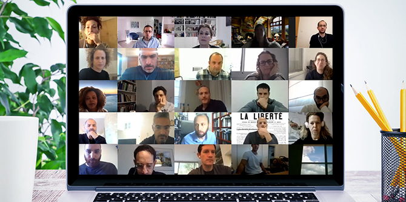

יום הלימוד המשותף הראשון לעמיתי כלל תוכניות מכון מנדל למנהיגות, אשר התקיים באמצע חודש ינואר 2021 במהלכו של סגר נוסף עקב משבר הקורונה, יצא לפועל במתכונת וירטואלית.

ימי הלימוד המשותפים הם הזדמנות משמעותית להיכרות, למפגש ולשיח בין עמיתי כלל תוכניות המכון, ומטרתם גם לחשוף את העמיתים לתכנים ולמרחבי ההשפעה שבהם המכון מבקש לפעול. "אנחנו מסתכלים על המשבר שיצר נגיף הקורונה בצורה מפוכחת ומתוך ענווה וצניעות, ומחליטים למקסם את מה שאפשר ללמוד ממנו", אמרה יעל הס, מנהלת מכון מנדל למנהיגות. "אנחנו ממציאים את עצמנו מחדש תוך בחינת מערכת הערכים שלנו באופן מתמיד. להוביל ולהנהיג פירושם גם להתמודד עם הקשיים שעל סדר היום, למצוא את הכלים המתאימים ולייצר מפגש למידה משמעותי, שלא מתעלם מהקשיים ומקדם את המפגשים האישיים" אמרה.
בתוכניות המנהיגות המגוונות של המכון משתתפים עמיתים מקהילות וממגזרים שונים בחברה בישראל, ובהם מנהיגים מהקהילה החרדית, מובילים בחינוך הבלתי פורמלי, מובילים בתחום התרבות היהודית וקציני צה"ל. ימי הלימוד המשותפים מבקשים ליצור מרחב שבו העמיתים יוכלו לשבת יחד ולקיים שיח בונה, להקשיב ולהגיב, ובכך להרחיב ולהעמיק את איכות השיח, להעצים ולשכלל את יכולות המנהיגות שלהם, ולהיות מסוגלים לתרגם באופן מיטבי את הרעיונות שהם מגבשים לכדי תוכנית פעולה.
המציאות אשר הכתיבה עבורנו את הריחוק החברתי היא שהביאה אותנו להגמיש את היכולות ולעצב מחדש את אופן המפגש הנוכחי. לקראת יום הלימוד המשותף נבנתה סביבה מקוונת המיועדת להתמודד באופן מיטבי עם אתגרי הלמידה מרחוק ועם אי-היכולת להיפגש פנים-אל-פנים. השאיפה הייתה לבנות סביבת למידה נוחה ואסתטית, שתאפשר התמצאות קלה ומעורבות מרבית של העמיתים, תוך התחשבות בהבדלים במידת האוריינות הדיגיטלית של המשתתפים ובתנאים הפיזיים המשתנים. כמו כן הושם דגש על הפן הבין-אישי הבלתי פורמלי, שהיה חלק משמעותי במפגש המשותף.

במהלך היום נערכו מפגשי למידה מקוונים עם אנשי סגל מובילים בתוכניות המנהיגות, ובהם קיבלו העמיתים הזדמנות ללמוד על הסוגיות והתכנים המעסיקים אותם. אחת מיחידות הלימוד של תוכניות מנדל לפיתוח מנהיגות בקהילה החרדית עוסקת בבחינת המתח שנוצר מעצם המפגש בין אנשים הנושאים מטען תורני לבין המרחב הישראלי המדינתי שאליו הם שייכים ובו הם פועלים. "העמיתים הם הדרג הצומח בתוך המרחב התוסס הזה של היצירה", אמרה מנהלת התוכניות, ד"ר נעמי פרל. "הם מחויבים לפעולה ערכית ומדויקת, ומתפקדים כאנשי תיווך בין כל העולמות הללו". הסוגיות המעסיקות את התוכנית הן המתח בין שינוי לשימור, בין הפרט לקהילה לממלכה, בין מימוש עצמי לייעוד, בין מסורת למודרנה, ובתפקידם של העמיתים ושל מנהיגי הקהילות בעידן הזה.
בשיחה שנערכה בין
ד"ר רות קלדרון ובין
אשת ההלכה מלכה פיוטרקובסקי, חברות סגל בתוכנית מנדל למנהיגות בתרבות יהודית, עמדו השתיים על יצירותיו ועל תפיסותיו של חיים נחמן ביאליק כדי לברר את משמעות "מפעליו" בתרבות הישראלית כיום. ביאליק, נוסף על היותו המשורר הלאומי, היה איש הגות, יזם ומנהיג תרבות פורץ דרך. "אנחנו מתייחסות למציאות העכשווית דרך האספקלריה של הדברים שלו" אמרה
ד"ר רות קלדרון, "הוא אמנם גדל בעולם חסידי, אך כאדם יוצר הקפיד לקרוא ולהעמיק גם בעולם שסביבו. אנחנו מבינות שמתוך עושר של ידע תיווצר תרבות עשירה, עמוקה וגם מחוברת לשורשים". לסיכום אמרה
מלכה פיוטרקובסקי: "ביאליק הבין את השירה של המקורות, שמורכבת מכל מיני קולות שאפשר להפוך אותם לקול אחד קנוני תוך הקפדה על השוני".

יום הלימוד יצר סקרנות ועניין רב, הן ברמה האישית והתרבותית והן ברמה האינטלקטואלית. למרות השימוש באמצעים דיגיטליים, המשתתפים הרגישו שהייתה אפשרות אמיתית לשוחח ולהכיר, ונהנו ממפגש אישי ובין-מגזרי משמעותי שכלל צדדים חברתיים ורגשיים לצד הצדדים הלימודיים. "אני מוצאת חשיבות רבה בקיום מפגשים עם תוכניות מנהיגות אחרות. הדבר תורם ומעשיר כל כך בתוכן ובהון האנושי", כתבה אחת העמיתות, ועמית אחר הוסיף: "הממשק בין עמיתי התוכניות מפרה… כך נוכל לסייע אחד לשני בהתמודדות עם אתגרי מנהיגות שונים ודומים".
{kind=link}